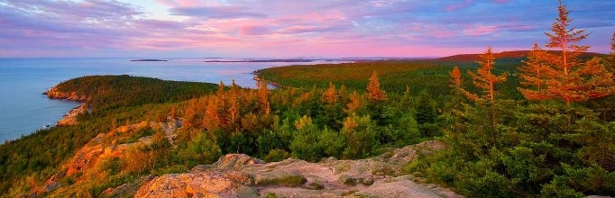
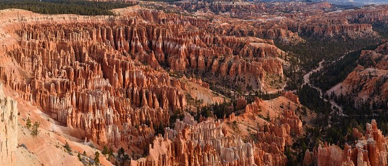
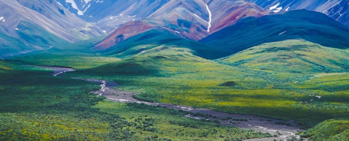
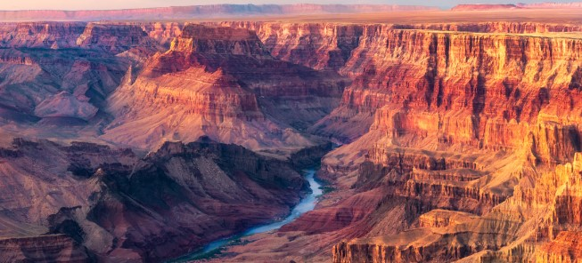
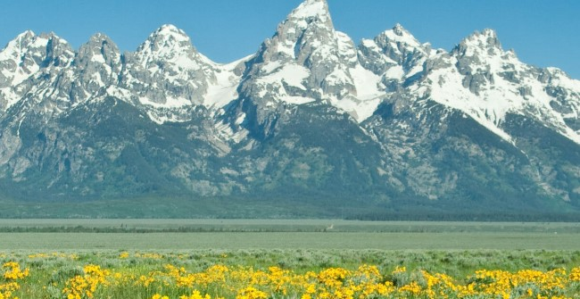
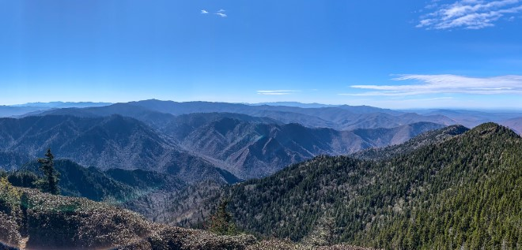
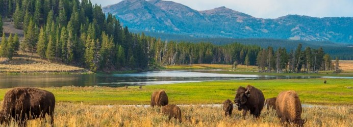
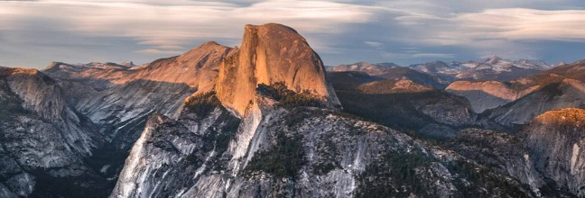
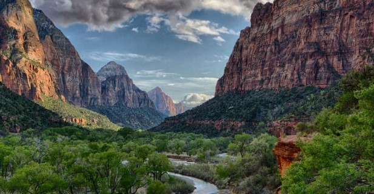

Landscapes
- Acadia National Park 
- Arches National Park
- Bryce Canyon National Park 
- Death Valley National Park
- Denali National Park 
- Grand Canyon National Park 
- Grand Teton National Park 
- Great Smoky National Park 
- Rocky National Park
- Yellow Stone National Park 
- Yosemite National Park 
- Zion National Park 